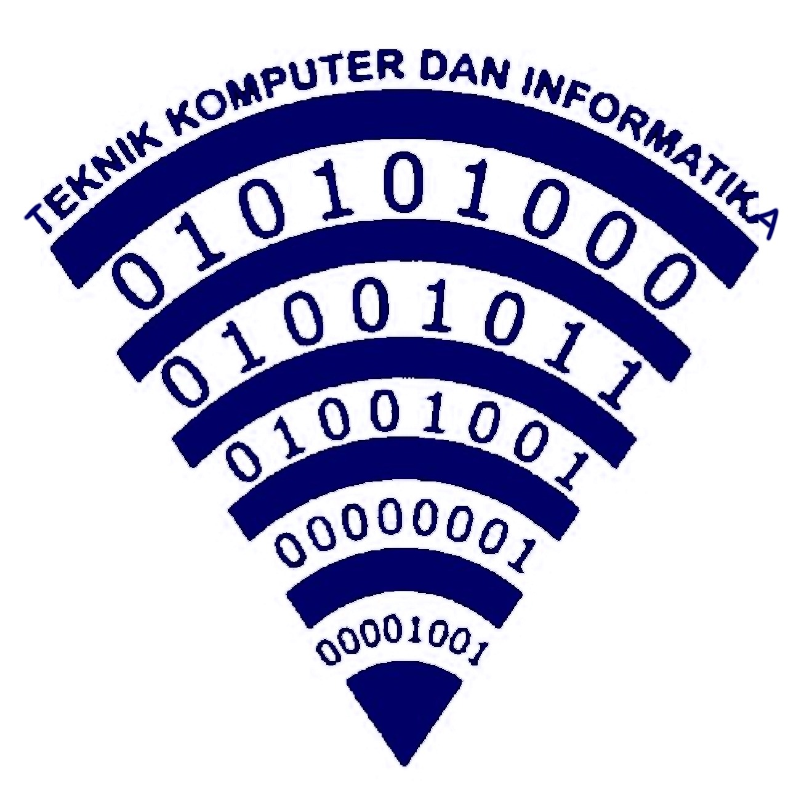

Teknik Jaringan Komputer dan Telekomunikasi
Pengantar
Teknik Jaringan Komputer dan Telekomunikasi atau yang biasa disebut TJKT adalah teknik yang mempelajari tentang cara instalasi Komputer, instalasi LAN (Jaringan Internet, Fiber Optik),
memperbaiki Komputer (PC atau Laptop) dan mempelajari program-program komputer itu sendiri. Jurusan Teknik Komputer Jaringan ini selain mempelajari itu semua mereka juga dibekali dengan
Troubleshooting Jaringan, trobleshoting komputer, perawatan komputer, perawatan printer dan perawatan hardware lainnya.
Sekarang ini jurusan TKJ merupakan jurusan yang sangat populer/banyak peminatnya. Jurusan TKJ sangatlah mudah untuk dipelajari hanya modal kemauan untuk belajar dan terus belajar.
Kompetensi Dasar
- Komputer dan Jaringan Dasar
- Pemrograman Dasar
- Dasar Desain Grafis
- Teknologi Jaringan Berbasis Luas (WAN)
- Administrasi Insfrastruktur Jaringan
- Administrasi Sistem Jaringan
- Teknologi Layanan Jaringan
- Produk Kreatif dan Kewirausahaan
Tujuan Pembelajaran
Tujuan pembelajaran TJKT di SMKN 1 Subang adalah bisa menjalankan fungsi bisnis dan edukasi. Pada fungsi bisnis, kegiatan pembelajaran berorientasi terhadap keuntungan (laba usaha).
Sedangkan fungsi edukatif dimaksudkan sebagai wahana belajar warga sekolah terutama peserta didik untuk pelatihan kewirausahaan sehingga tujuan akhirnya menghasilkan wirausahawan (enterprenuer).
Pembelajaran ini didukung juga oleh Unit Produksi SMKN 1 Subang, yang berpusat pada kegiatan usaha disetiap program keahlian yang terdiri dari Rekayasa Perangkat Lunak (RPL), dan Teknik Komputer dan Jaringan (TKJ).
Tenaga Pengajar
- Rizal Suyaman, S.Kom
- Imas Rohayati, S.T
- Intjer Kurnia Syukur, S.T
- Dede Iskandar, S.T